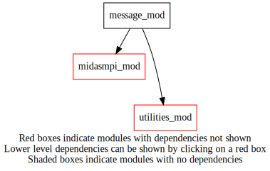
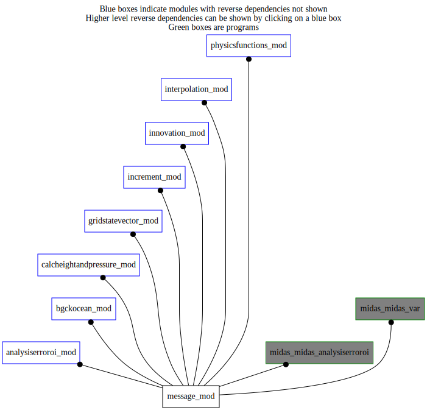

Dependency Diagrams:
 Direct Dependency Diagram¶
 Reverse Dependency Diagram¶
Description
MODULE message_mod (prefix=’msg’ category=’8. Low-level utilities and constants’)
- Purpose
Output message interface with configurable verbosity. Also provides string representation for some intrinsic types.
Quick access
- Variables
- Routines
msg(),msg_chararray2str(),msg_int2str(),msg_intarray2str(),msg_log2str(),msg_logarray2str(),msg_memusage(),msg_readnml(),msg_real42str(),msg_real4array2str(),msg_real82str(),msg_real8array2str(),msg_section(),msg_setverbthreshold(),msg_str2str(),msg_write()Needed modules
midasmpi_mod: MODULE midasMpi_mod (prefix=’mmpi’ category=’8. Low-level utilities and constants’)
utilities_mod: MODULE utilities_mod (prefix=’utl’ category=’8. Low-level utilities and constants’)Variables
- message_mod/msg_always [integer,parameter/public]¶
verbosity level indicating a message is always printed irrespectively of set threshold
- message_mod/msg_default [integer,parameter/public]¶
default verbosity level
- message_mod/msg_never [integer,parameter/public]¶
verbosity level indicating a message is never printed irrespectively of set threshold
- message_mod/msg_nml [integer,public]¶
verbosity level fixed from namelist
- message_mod/str [public]¶
Subroutines and functions
- subroutine message_mod/msg(origin, message[, verb_opt[, mpiall_opt[, separator_opt]]])¶
- Purpose
Output message if its verbosity level is less than or equal to the user provided verbosity threshold (see msg_readNml()). The verbosity levels are:
msg_ALWAYS : always printed, irrespectively of the threshold
0 : critical, should always printed
1 : default priority; printed in operational context
2 : detailed output, provides extra information
3 : intended for developers, printed for debugging or specific diagnostcs
msg_NEVER : never printed, irrespectively of the threshold
- Arguments
origin [character ,in] :: originating subroutine, function or program
message [character ,in] :: message to be printed
- Options
verb_opt [integer ,in,] :: maximum verbosity level of messages to be printed, defaults to 1
mpiall_opt [logical ,in,] :: choose to prints to all MPI tasks (default), otherwise only task 0
separator_opt [character ,in,] :: separator string between origin and message
- Called from
aer_analysiserror(),ocebg_bgchecksst(),ocebg_bgcheckseaice(),ocebg_getfgeamplification(),calczandp_gsv_nl(),calczandp_gsv_tl(),calczandp_gsv_ad(),calcheight_gsv_nl(),czp_calcreturnheight_gsv_nl(),calcheight_gsv_nl_vcode2100x_r4(),calcheight_gsv_nl_vcode2100x_r8(),calcheight_gsv_nl_vcode5xxx(),calcheight_gsv_tl(),calcheight_gsv_ad(),calcpressure_gsv_nl(),czp_calcreturnpressure_gsv_nl(),calcpressure_gsv_nl_vcode2100x(),calcpressure_gsv_nl_vcode5xxx_r8(),calcpressure_gsv_nl_vcode5xxx_r4(),calcpressure_gsv_tl(),calcpressure_gsv_ad(),calczandp_col_nl(),calczandp_col_tl(),calczandp_col_ad(),calcheight_col_nl(),czp_calcreturnheight_col_nl(),calcheight_col_nl_vcode2100x(),calcheight_col_nl_vcode5xxx(),calcheight_col_tl(),calcheight_col_ad(),calcpressure_col_nl(),czp_calcreturnpressure_col_nl(),calcpressure_col_nl_vcode2100x(),calcpressure_col_nl_vcode5xxx(),calcpressure_col_tl(),calcpressure_col_ad(),fetch3dlevels_r8(),fetch3dlevels_r4(),fetch1dlevels_r8(),fetch1ddpdps_r8(),calcheightcoeff_gsv(),calcheightcoeff_col(),readnamelist(),gsv_setup(),gsv_allocate(),gsv_communicatetimeparams(),gsv_checkmpidistribution(),gsv_copy(),gsv_copy4dto3d(),gsv_transposetilestovarslevs(),gsv_horizsubsample(),gsv_transposesteptovarslevs(),gsv_transposesteptotiles(),gsv_transposetilestostep(),gsv_transposetilestompiglobal(),gsv_smoothhorizontal(),gsv_applymasklam(),inc_computehighresanalysis(),inc_analpostprocessing(),inc_writeincandanalhighres(),inc_getincrement(),inc_writeincrement(),inc_writeanalysis(),inc_interpolateandadd(),inn_setupcolumnsonanlinclev(),int_readnml(),int_interp_gsv(),int_hinterp_gsv(),int_vinterp_gsv(),vinterp_gsv_r8(),vinterp_gsv_r4(),int_tinterp_gsv(),int_vinterp_col(),int_setezopt(),int_hinterpscalar_gsv(),int_hinterpscalar_r4_2d(),int_sintcloudtogrid_gsv(),int_hinterpscalar_r8_2d(),int_hinterpuv_gsv(),int_hinterpuv_r4_2d(),int_hinterpuv_r8_2d(),msg_memusage(),msg_section(),msg_setverbthreshold(),msg_readnml(),phf_tetens_coefs_switch(),midas_analysiserroroi,midas_var- Call to
- subroutine message_mod/msg_memusage(origin[, verb_opt[, mpiall_opt]])¶
- Purpose
Report memory usage
- Arguments
origin [character ,in] :: originating subroutine, function or program
- Options
verb_opt [integer ,in,] :: verbosity level of the message
mpiall_opt [logical ,in,] :: choose to prints to all MPI tasks (default), otherwise only task 0
- Called from
gsv_transposetilestovarslevs(),gsv_transposesteptovarslevs(),inc_computehighresanalysis(),inc_analpostprocessing(),inc_writeincandanalhighres(),midas_analysiserroroi,midas_var- Call to
- subroutine message_mod/msg_section(origin, section[, description_opt[, verb_opt[, mpiall_opt]]])¶
- Purpose
Document, both in source and runtime listings, sections of a program.
- Arguments
origin [character ,in] :: originating subroutine, function or program
section [character ,in] :: section number
- Options
description_opt [character ,in,] :: optional description message to be printed
verb_opt [integer ,in,] :: verbosity level of the message
mpiall_opt [logical ,in,] :: choose to prints to all MPI tasks (default), otherwise only task 0
- Call to
- subroutine message_mod/msg_setverbthreshold(threshold[, besilent_opt])¶
- Purpose
Sets the maximum verbosity level of messages to be printed.
- Arguments
threshold [integer ,in] :: maximum verbosity level of messages to be printed to listing
- Options
besilent_opt [logical ,in,] :: choose to not print warning message (default .false.)
- Called from
- Call to
- subroutine message_mod/msg_readnml()¶
- Purpose
Reads the module configuration namelist
- Namelist parameters
- verbosity
Each call to msg() specifies a verbosity level; this threshold configures until which level messages will be outputed.
- Called from
- Call to
utl_isnamelistpresent(),msg(),utl_abort(),msg_setverbthreshold()
- subroutine message_mod/msg_write(origin, message[, separator_opt])¶
- Purpose
Format and write message to default output
- Arguments
origin [character ,in] :: originating subroutine/function
message [character ,in] :: message to be printed
- Options
separator_opt [character ,in,] :: separator string between origin and message
- Called from
- function message_mod/msg_str2str(stringin[, trim_opt[, quote_opt]])¶
- Purpose
Trivial overloading (for uniformity of concatenation)
- Arguments
stringin [character ,in] :: input string to be processed
- Options
trim_opt [logical ] :: choose to trim the string (possibly inside quotes)
quote_opt [logical ] :: choose to write preceding and following single quote “’” to insist it is a string
- Return
string :: resulting string that was processed
- function message_mod/msg_log2str(num)¶
- Purpose
Returns string representation of logical variable value
- Arguments
num [logical ,in] :: input logical variable to be interpreted
- Return
string :: resulting string with logical value
- Called from
- function message_mod/msg_int2str(num)¶
- Purpose
Returns string representation of integer
- Arguments
num [integer ,in] :: input integer variable to be interpreted
- Return
string :: resulting string with integer value
- Called from
- function message_mod/msg_real42str(num[, digits_opt])¶
- Purpose
Returns string representation of real(4)
- Arguments
num [real ,in] :: input real(4) variable to be interpreted
- Options
digits_opt [integer ,in,] :: number of digits to include in output
- Return
string :: resulting string with variable’s value
- Called from
- function message_mod/msg_real82str(num[, digits_opt])¶
- Purpose
Returns string representation of real(8)
- Arguments
num [real ,in] :: input real(8) variable to be interpreted
- Options
digits_opt [integer ,in,] :: number of digits to include in output
- Return
string :: resulting string with variable’s value
- Called from
- function message_mod/msg_chararray2str(array[, vertical_opt])¶
- Purpose
Returns string representation of character(len=*), dimension(:)
- Arguments
array (*) [character ,in] :: input character string array
- Options
vertical_opt [logical ,in,] :: choose to represent array vertically (default .false.)
- Return
string :: resulting string
- function message_mod/msg_logarray2str(array[, vertical_opt])¶
- Purpose
Returns string representation of logical, dimension(:)
- Arguments
array (*) [logical ,in] :: input array of logical variables
- Options
vertical_opt [logical ,in,] :: choose to represent the array vertically (default .false.)
- Return
string :: resulting string
- Call to
- function message_mod/msg_intarray2str(array[, vertical_opt])¶
- Purpose
Returns string representation of integer, dimension(:)
- Arguments
array (*) [integer ,in] :: input array of integer variables
- Options
vertical_opt [logical ,in,] :: choose to represent the array vertically (defaults .false.)
- Return
string :: resulting string
- Call to
- function message_mod/msg_real4array2str(array[, digits_opt[, vertical_opt]])¶
- Purpose
Returns string representation of real(4), dimension(:)
- Arguments
array (*) [real ,in] :: input array of real(4) variables
- Options
digits_opt [integer ,in,] :: number of digits to include in output
vertical_opt [logical ,in,] :: choose to represent array vertically (default .false.)
- Return
string :: resulting string
- Call to
- function message_mod/msg_real8array2str(array[, digits_opt[, vertical_opt]])¶
- Purpose
Returns string representation of real(8), dimension(:)
- Arguments
array (*) [real ,in] :: input array of real(4) variables
- Options
digits_opt [integer ,in,] :: number of digits to include in output
vertical_opt [logical ,in,] :: choose to represent array vertically (default .false.)
- Return
string :: resulting string
- Call to
{kind=link}
{kind=link}